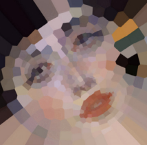

DaRt: Generative Art using Dimensionality Reduction Algorithms

Venue. VIS (2021) Pictorial
Authors. Rene Cutura, Katrin Angerbauer, Frank Heyen, Natalie Hube, Michael Sedlmair
Abstract. Dimensionality Reduction (DR) is a popular technique that is often used in Machine Learning and Visualization communities to analyze high-dimensional data. The approach is empirically proven to be powerful for uncovering previously unseen structures in the data. While observing the results of the intermediate optimization steps of DR algorithms, we coincidently discovered the artistic beauty of the DR process. With enthusiasm for the beauty, we decided to look at DR from a generative art lens rather than their technical application aspects and use DR techniques to create artwork. Particularly, we use the optimization process to generate images, by drawing each intermediate step of the optimization process with some opacity over the previous intermediate result. As another alternative input, we used a neural-network model for face-landmark detection, to apply DR to portraits, while maintaining some facial properties, resulting in abstracted facial avatars. In this work, we provide such a collection of such artwork.
Acknowledgements. Funded by the Deutsche Forschungsgemeinschaft (DFG, German Research Foundation) - Project-ID 251654672 - TRR 161